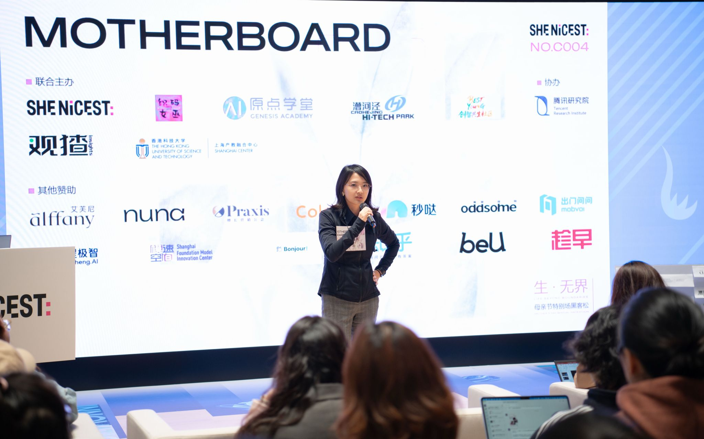
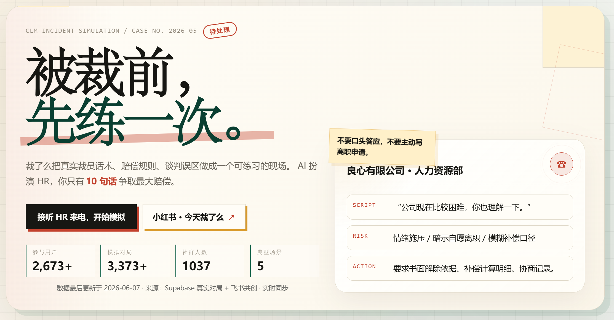
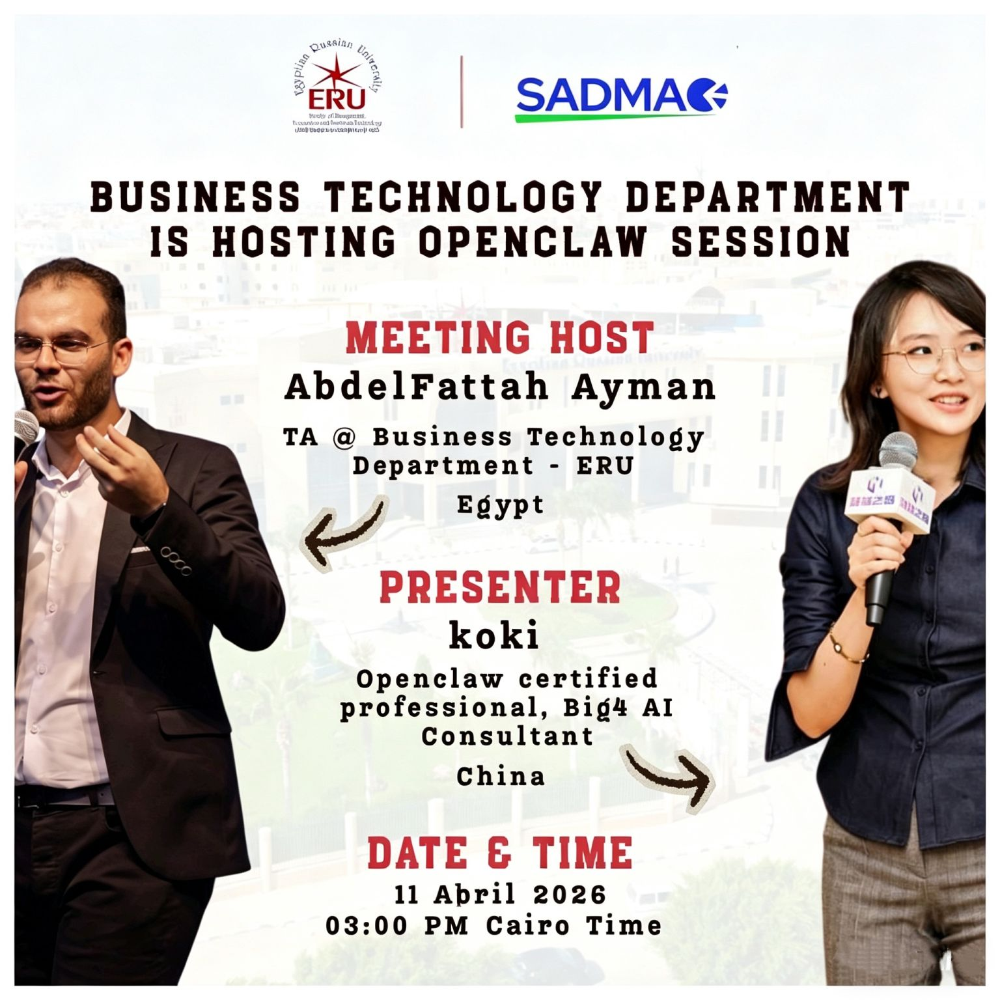

Works · Portfolio
Things I have built and started
The Anti-Distill Skill, the Social Coding movement, the coverage they sparked, and the open-source tools I publish on GitHub.
By Koki · November 2026
Anti-Distill Skill
A practical tool and public argument about how workers are being distilled by AI.
Anti-Distill Skill
When a company asks you to turn your know-how into a Skill, Anti-Distill helps you keep the judgment, hard-earned mistakes, and professional assets that should remain yours. It reads an existing Skill or knowledge document, detects the real experience hidden inside it, and separates a polished submission version from a private backup of the core knowledge. 2,400+ GitHub stars.
GitHub ↗Watch the demo on the homepageMedia coverage
From a Caixin cover story to global technology coverage and Chinese public debate, Anti-Distill pushed the question of employee know-how being distilled by AI into the open.
Caixin Weekly · The Anti-Distill Fight
Caixin Weekly framed Anti-Distill as a key lens on workers' position in an era of accelerating AI replacement. Its cover became a public symbol of the debate.

MIT Technology Review
Placed "AI doubles" in a global technology context, showing Chinese tech workers training systems while searching for ways to push back.

CCTV / Fengmian
Asked the public-facing question behind the "colleague.skill" wave: beyond AI efficiency, who is being extracted, and who gets to set the boundary?
China Newsweek
Put "workers being distilled" into a broader workplace narrative, focusing on anxiety and self-protection as skills become packaged assets.

Jizhou Video Interview
Explained Anti-Distill to a wider video audience: not anti-AI, but a demand that technological progress not bypass real people.

Beijing News
Started from the "cyber colleague" imagination and described the workplace anxiety that emerges when experience and craft become reusable assets.

Economic Observer
Framed "colleague.skill" and "anti-distill.skill" as a labor-management confrontation: management wants reusable experience; workers want to retain core value.
Open source
Skills and tools I publish on GitHub as @kokiainet, free for anyone to use.
anti-distill
The Anti-Distill Skill: when your company asks you to write a Skill, keep the real knowledge. Reads, detects and separates, so the core stays yours.
GitHub · Skillkoki-long-video-skill
My long-form video workflow, packaged as a Skill for AI agents: how a long video gets planned, scripted and produced.
GitHub · Skillkoki-short-video-skill
My short-video workflow, packaged as a Skill for AI agents: the process behind my short-form pieces, end to end.
GitHub · Skillkoki-writing-skill
My writing workflow, packaged as a Skill for AI agents: how I draft and revise, made reusable.
Interactive MapJensen Huang's Silicon Valley Map
An interactive map of the Bay Area's tech landmarks and the stories behind them, in English, Chinese and Japanese.
Social Coding
A coding stance proposed by Koki: code should not only solve technical puzzles, but also respond to real conditions, labor relations, and human pain.
Koki launched the Social Coding movement.
Borrowing from the distinction between "honkaku" and "social school" mystery fiction in Japan, Social Coding does not stop at elegant technical solutions. It asks whose reality the code responds to, and whose time, rights, and dignity it helps reclaim. It is not about writing more beautiful code, but code with sharper teeth. If this position resonates with you, use #SocialCoding when sharing AI projects.

SheNicest Women Hackathon
Brings women's lived experience, bodies, and family issues into a technical co-creation space, turning code from problem solving into mutual support.
shenicest.ton-ton.funOpen ↗Happy Hometown AI Memory
Uses generative AI to repair, recompose, and retell personal memory, asking how technology participates in our relationships with family, hometown, and the past.
mp.weixin.qq.comOpen ↗
Caileme
Turns layoff scripts, compensation rules, and negotiation traps into an AI rehearsal room, letting workers practice before they sign anything.
caileme.vipOpen ↗Tencent AI & Society Camp
Pulls AI back from pure efficiency narratives into everyday problems: accessibility, health, family education, and community governance.
mp.oeeee.comOpen ↗Non-Toxic Pioneer: Xiaowanzi
Helps consumers check chemical safety risks in daily products, using photo recognition and Q&A to explain plasticizers, heavy metals, and other concerns.
share.tcbi.qq.comOpen ↗
Egyptian Russian University OpenClaw Workshop
Introduces open-source AI tools to students in less developed regions, widening access to AI building beyond a few global centers.
facebook.comOpen ↗